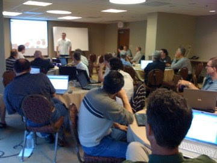
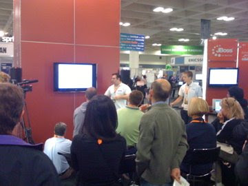
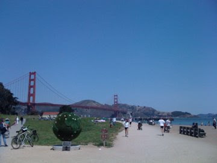
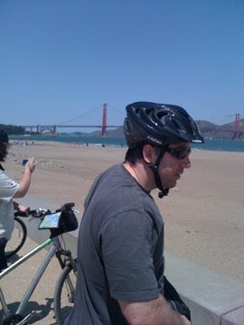

A take on Drools Boot Camp 09…
These are my notes and pictures – I am sure others will have notes and pictures to post (if you do have pictures, feel free to email them to me and I will share them here, or links to Flickr or whatever…).
First day, “state of the union”:

Also had JavaOne duties: 
Just a few of the interesting things I worked on with others:
Franklin American crew:
- a Guvnor plugin to persist rule data to a RDBMS in a reasonably normalised format (that they could mine, use for other things)
- a design for “smart views” – searches that are persistent based on category, status etc, which can be used to build/run tests and “deploy” (so you are only deploying certain rules in a certain status) – selectors on steroids.
NHIM:
Talked with Emory Fry about a standard rule based “platform” for the National Health Information Network – the idea being a common model, execution server and environment so that rules can be sent as messages, and processed close to where the data lives (rather then having to pull all the data around).
Michael Finger worked on making Jackrabbit clusterable for failover (I expect a blog from him sometime !).
A general point I took away was the different ways people will want to integrate and re-use your code, often in unexpected ways. I need to be more vigilant in leaving clear interfaces, with documentation for others to use, and think more about plug in architectures that allow people to extend things in an safe and upgrade friendly way.
For some R&R some of us went on an epic ride across the Golden Gate Bridge:
 
I look forward to next time.

{kind=link}
{kind=link}
{kind=link}
{kind=link}